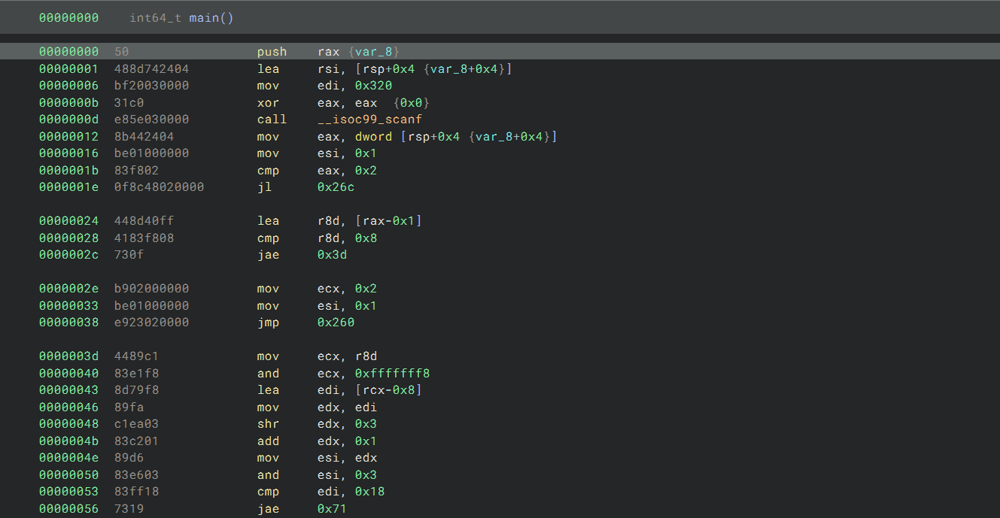
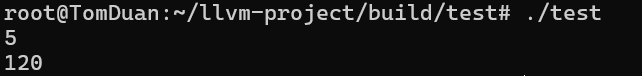

编译器
编译器是将高级编程语言的源代码翻译为目标代码的程序，其主要目标是生成高效且正确的目标代码，使程序能够在目标机器上运行。
完整的编译过程可以分为如下几个阶段：
接下来我将对每个阶段进行分析，本文对应的实验环境配备如下：
| 设备类型 |
设备名称 |
| 实验系统 |
Ubuntu-20.04 |
| 操作系统 |
Linux 64位 |
| 实验平台 |
Windows Subsystem for Linux(WSL) |
如下是我的源码文件test.c ，使用clang -ccc-print-phases test.c命令可以查看编译的全部过程
1
2
3
4
5
6
7
8
9
10
11
12
13
14
15
|
#include <stdio.h>
int main() {
int i, n, f;
scanf("%d", &n);
i = 2;
f = 1;
while (i <= n) {
f = f * i;
i = i + 1;
}
printf("%d\n", f);
return 0;
}
|
预处理阶段
C/C++：#define 宏名 宏值
将宏定义展开，并根据 #if、#ifdef 等决定包含哪些代码
将所有包含的头文件都展开并复制到当前位置，并通过添加行标记帮助编译器在错误报告中指出源代码有问题的位置
1
| 命令：clang -E test.c -o test.i
|
1
2
3
4
5
6
7
8
9
10
11
12
13
14
15
16
17
18
19
20
21
22
23
24
25
26
27
28
29
30
31
32
|
# 1 "test.c"
# 1 "<built-in>" 1
# 1 "<built-in>" 3
# 341 "<built-in>" 3
# 1 "<command line>" 1
# 1 "<built-in>" 2
# 1 "test.c" 2
# 1 "/usr/include/stdio.h" 1 3 4
# 27 "/usr/include/stdio.h" 3 4
# 1 "/usr/include/x86_64-linux-gnu/bits/libc-header-start.h" 1 3 4
# 33 "/usr/include/x86_64-linux-gnu/bits/libc-header-start.h" 3 4
# 1 "/usr/include/features.h" 1 3 4
# 439 "/usr/include/features.h" 3 4
# 1 "/usr/include/stdc-predef.h" 1 3 4
# 440 "/usr/include/features.h" 2 3 4
# 461 "/usr/include/features.h" 3 4
# 1 "/usr/include/x86_64-linux-gnu/sys/cdefs.h" 1 3 4
# 452 "/usr/include/x86_64-linux-gnu/sys/cdefs.h" 3 4
# 1 "/usr/include/x86_64-linux-gnu/bits/wordsize.h" 1 3 4
# 453 "/usr/include/x86_64-linux-gnu/sys/cdefs.h" 2 3 4
# 1 "/usr/include/x86_64-linux-gnu/bits/long-double.h" 1 3 4
# 454 "/usr/include/x86_64-linux-gnu/sys/cdefs.h" 2 3 4
# 462 "/usr/include/features.h" 2 3 4
# 485 "/usr/include/features.h" 3 4
# 1 "/usr/include/x86_64-linux-gnu/gnu/stubs.h" 1 3 4
# 10 "/usr/include/x86_64-linux-gnu/gnu/stubs.h" 3 4
# 1 "/usr/include/x86_64-linux-gnu/gnu/stubs-64.h" 1 3 4
# 11 "/usr/include/x86_64-linux-gnu/gnu/stubs.h" 2 3 4
# 486 "/usr/include/features.h" 2 3 4
# 34 "/usr/include/x86_64-linux-gnu/bits/libc-header-start.h" 2 3 4
# 28 "/usr/include/stdio.h" 2 3 4
|
编译阶段
词法分析
这一阶段的功能是识别单词并找出语法错误，输出词法单元序列
1
| 命令：clang -E -Xclang -dump-tokens test.c
|
1
2
3
4
5
6
7
8
9
10
11
12
13
14
15
16
17
18
19
20
21
22
23
24
25
26
27
28
29
|
int 'int' [StartOfLine] Loc=<test.c:3:1>
identifier 'main' [LeadingSpace] Loc=<test.c:3:5>
l_paren '(' Loc=<test.c:3:9>
r_paren ')' Loc=<test.c:3:10>
l_brace '{' [StartOfLine] Loc=<test.c:4:1>
int 'int' [StartOfLine] [LeadingSpace] Loc=<test.c:5:5>
identifier 'i' [LeadingSpace] Loc=<test.c:5:9>
comma ',' Loc=<test.c:5:10>
identifier 'n' Loc=<test.c:5:11>
comma ',' Loc=<test.c:5:12>
identifier 'f' Loc=<test.c:5:13>
semi ';' Loc=<test.c:5:14>
identifier 'scanf' [StartOfLine] [LeadingSpace] Loc=<test.c:6:5>
l_paren '(' Loc=<test.c:6:10>
string_literal '"%d"' Loc=<test.c:6:11>
comma ',' Loc=<test.c:6:15>
amp '&' Loc=<test.c:6:16>
identifier 'n' Loc=<test.c:6:17>
r_paren ')' Loc=<test.c:6:18>
semi ';' Loc=<test.c:6:19>
identifier 'i' [StartOfLine] [LeadingSpace] Loc=<test.c:7:5>
equal '=' Loc=<test.c:7:6>
numeric_constant '2' Loc=<test.c:7:7>
semi ';' Loc=<test.c:7:8>
identifier 'f' [StartOfLine] [LeadingSpace] Loc=<test.c:8:5>
equal '=' Loc=<test.c:8:6>
numeric_constant '1' Loc=<test.c:8:7>
semi ';' Loc=<test.c:8:8>
|
语法分析
这一阶段将词法分析输出的token作为输入，并分析语法结构，判断是否合法，最终生成语法分析树。
语法结构的基本定义：标识符是表达式、数是表达式
语法结构的递归定义：若expression1和expression2都是表达式，那么expression1+expression2和expression1*expression2都是表达式
1
| 命令：clang -E -Xclang -ast-dump test.c
|
这一部分输出的内容包含clang内置的类型定义和源码的语法分析树，一般来说，从main ‘int’开始的内容才是源代码的语法分析树。
语义分析
这一阶段是自动执行的，语法分析的输出已经包含了语义分析的结果。
语义分析包含如下几种功能：
中间代码生成——虚拟机程序
特点：容易生成、容易翻译成目标程序
这一阶段生成LLVM IR中间代码，硬盘上存储.bc后缀的二进制中间语言，而人类可读的代码是.ll后缀。
1
| 命令：clang -S -emit-llvm test.c -o test.ll
|
1
2
3
4
5
6
7
8
9
10
11
12
13
14
15
16
17
18
19
20
21
22
23
24
25
26
27
28
29
30
31
32
33
34
35
36
| //部分中间代码如下所示：
; ModuleID = 'test.c'
source_filename = "test.c"
target datalayout = "e-m:e-p270:32:32-p271:32:32-p272:64:64-i64:64-f80:128-n8:16:32:64-S128"
target triple = "x86_64-pc-linux-gnu"
@.str = private unnamed_addr constant [3 x i8] c"%d\00", align 1
@.str.1 = private unnamed_addr constant [4 x i8] c"%d\0A\00", align 1
; Function Attrs: noinline nounwind optnone uwtable
define dso_local i32 @main() #0 {
%1 = alloca i32, align 4
%2 = alloca i32, align 4
%3 = alloca i32, align 4
%4 = alloca i32, align 4
store i32 0, i32* %1, align 4
%5 = call i32 (i8*, ...) @__isoc99_scanf(i8* getelementptr inbounds ([3 x i8], [3 x i8]* @.str, i64 0, i64 0), i32* %3)
store i32 2, i32* %2, align 4
store i32 1, i32* %4, align 4
br label %6
6: ; preds = %10, %0
%7 = load i32, i32* %2, align 4
%8 = load i32, i32* %3, align 4
%9 = icmp sle i32 %7, %8
br i1 %9, label %10, label %16
10: ; preds = %6
%11 = load i32, i32* %4, align 4
%12 = load i32, i32* %2, align 4
%13 = mul nsw i32 %11, %12
store i32 %13, i32* %4, align 4
%14 = load i32, i32* %2, align 4
%15 = add nsw i32 %14, 1
store i32 %15, i32* %2, align 4
br label %6
|
代码开头标识了模块的来源、目标平台数据布局等，之后主要是声明变量、分配空间、给变量赋值等操作
代码优化
这一阶段包含提升代码的质量，去除冗余部分等。
1
2
| 命令：clang -S -emit-llvm -O1 test.c -o test_O1.ll
clang -S -emit-llvm -O2 test.c -o test\_O2.ll
|
上面展示了两种代码优化命令，能够生成两种级别的优化代码。通过对代码观察我们发现O1级别优化的代码比O2级别优化的代码更简单，但是O2级别优化的代码性能更好，指令开销更少。
因此，在代码优化中，优化级别越高，代码内容不一定更简单，但是程序的执行性能一定更好
目标代码生成——汇编码
这一阶段是根据上一步优化的代码生成真正的汇编代码，从而交给汇编器实现汇编。
主要有如下功能：
生成可重定位机器码/汇编码
确定变量内存位置
中间代码指令->机器指令
为变量指定寄存器
1
| 命令：clang -S -O2 test.c -o testO2.s
|
汇编阶段
这一阶段是指汇编器将生成的汇编代码转换为机器指令，最终保存成可重定位目标程序的格式，并将其保存在.o文件中。
两次扫描汇编：第一次识别标识符并存入符号表，指定相对内存地址；第二次将指令转换为二进制序列，标识符转换为内存地址，产生可重定位机器码
1
| 命令：clang -c testO2.s -o test.o
|

由于可执行文件使用记事本打开会呈现乱码，因此需要用特殊工具打开并执行反汇编操作才可以查看内容。如上是使用Binary Ninja得到的test.o反汇编代码，这就是汇编器生成的目标程序。
链接和加载阶段
链接器负责处理目标程序和各类链接库的合并，最终得到了可执行文件文件，它可以被加载到内存中，由系统执行。
用nm查看二进制码中名字，objdump查看二进制码中的段，也可以进行反汇编操作

这样就得到了test.elf文件(linux系统中的可执行文件)，执行后发现得到了正确的结果，这就是从预处理到运行的完整编译过程！
编译器各阶段的组合
前端&后端
前端：主要依赖源语言，很大程度与目标机器无关
词法分析、语法分析、符号表创建、语义分析、中间代码生成、部分代码优化、错误处理
后端：只依赖目标机器、中间代码，不依赖源语言
代码优化、代码生成
分类：
- 单前端，多后端
- 多前端，单后端 .NET MSIL
- 多前端，多后端
扫描
多阶段合成一次扫描，读取一个输入文件，生成一个输出文件
词法分析、语法分析、语义分析、中间代码生成可合并
减少扫描次数
减少文件读写次数
中间文件保存在内存——可能会很复杂
某些阶段组合可能会产生问题
编译器开发
基于某种特定的语言模式
自动生成编译器各部分源程序
词法分析
文法分析
终结符：不能单独出现在推导式左边的符号，也就是说终结符不能再进行推导
非终结符：不是终结符的都是非终结符
起始符号：一般是第一个推导式左边的非终结符，通常为S
例如：在S→2aA∣B3这一推导式中，S是非终结符，因为它可以推导为后面的两种文法，2就是终结符，因为不能再进行推导。
构建语法树：根据符号串构建语法树，按照推导符号串的顺序逐步展开，最终构建。
例如，文法如下：

根据此文法推导符号串1abaa2a3的过程如下：
1
2
3
4
5
6
7
8
9
10
11
| S→B3
B→1aAB
得到符号串1aAB3
A→baA
得到1abaAB3
A→aS
得到1abaaSB3
S→2aA
得到1abaa2aAB3
A→ε，B→ε
得到1abaa2a3
|
因此构建的语法树如下：

词法分析器
词法分析程序简单说就是“读单词程序”，它对高级语言源程序进行扫描，再将源程序中“单词符号”组成的字符串分解成一个个单词。
单词符号分为5种:
- 保留字：例如C语言中的if、else、while、do等
- 标识符：由用户自己定义，用来标记常量、数组、变量、类型等
- 常数：整型常数369、布尔常数TRUE等
- 运算符：如”+”、”-“、”×”、”/“等
- 界符：作为语法上的分界符号使用，如逗号、括号、分号等
注意：保留字、运算符、界符的个数是确定的； 而常数、标识符则是不限定个数的
词法分析器的输入是程序源代码，输出的是等价单词符号序列，接下来我将使用Lex(flex)这一工具实现词法分析程序。